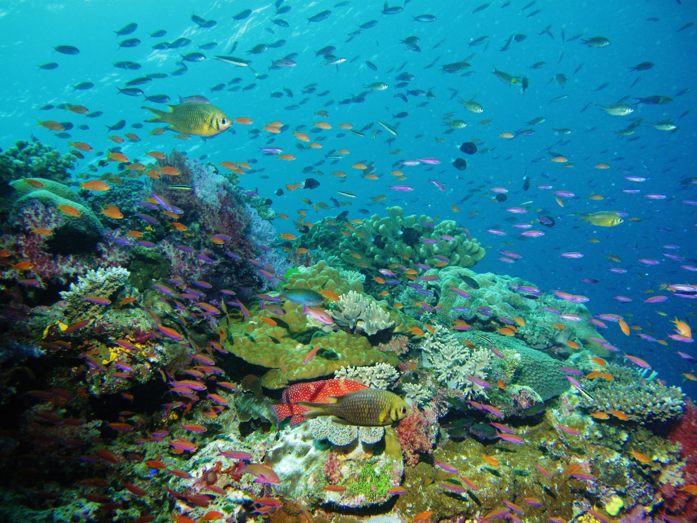
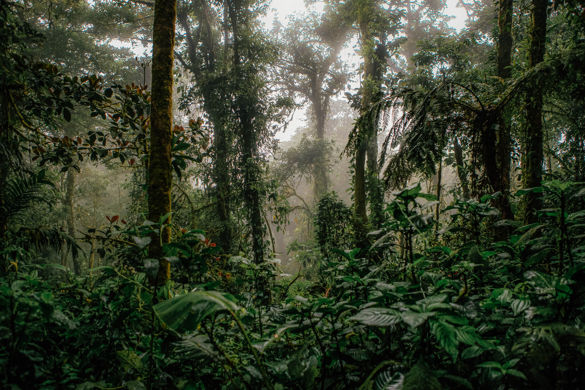
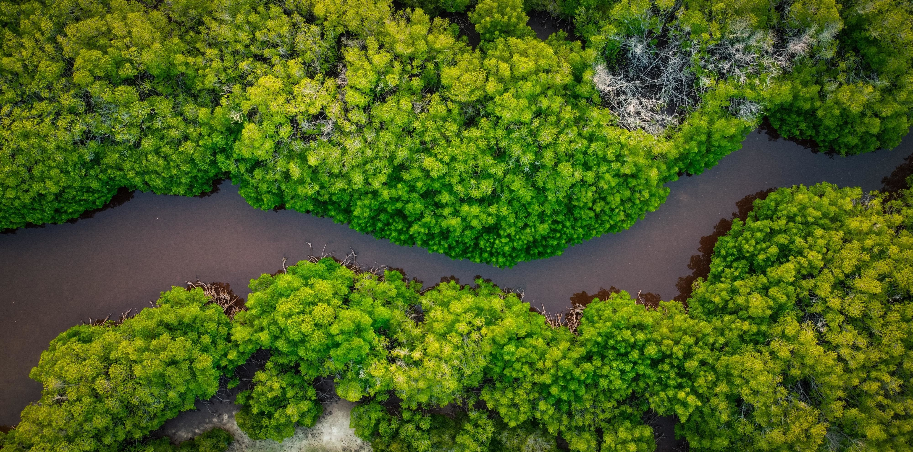

Biodiversity
Biodiversity, also known as biological diversity, refers to the variety of life on Earth, including the diversity of species, genetic diversity, and the stability of ecosystems. It is divided into three main components: genetic diversity (Genetic diversity) and species diversity (Species diversity). Genetic diversity allows species to adapt to changing environmental conditions and helps to maintain the health and resilience of populations. Species diversity is important for species diversity as it provides the basis for breeding programs to develop new varieties and breeds that are more productive, disease-resistant, and adapted to changing conditions. Loss of species diversity can have negative impacts on the functioning of ecosystems, such as the loss of ecosystem services and the potential for the spread of invasive species.
Ecosystem diversity is the variety of different ecosystems and the range of ecological processes and functions that they perform. Biodiversity is threatened by human activities such as habitat destruction, overexploitation of natural resources, pollution, climate change, and the introduction of invasive species. Efforts to protect and conserve biodiversity include establishing protected areas, promoting sustainable land use practices, restoring degraded ecosystems, reducing greenhouse gas emissions, and promoting sustainable consumption and production patterns. These efforts are essential to ensure the continued provision of ecosystem services and the maintenance of biodiversity for future generations.



Biodiversity is the variety of life on Earth, including the diversity of species, ecosystems, and genetic variation within species. Learning about biodiversity is important for several reasons. Firstly, biodiversity is essential for the functioning of ecosystems and the provision of ecosystem services such as clean air and water, pollination, and nutrient cycling. Loss of biodiversity can lead to ecosystem collapse and negatively impact human well-being. Secondly, biodiversity is important for human health and well-being, as many medicines, foods, and other products are derived from natural resources. Thirdly, biodiversity is an important cultural and aesthetic resource, providing inspiration for art, music, and literature. Finally, understanding biodiversity is critical for addressing environmental challenges such as climate change and ecosystem degradation. By learning about biodiversity, we can appreciate the importance of protecting and conserving our planet's ecosystems and the diversity of life on Earth.